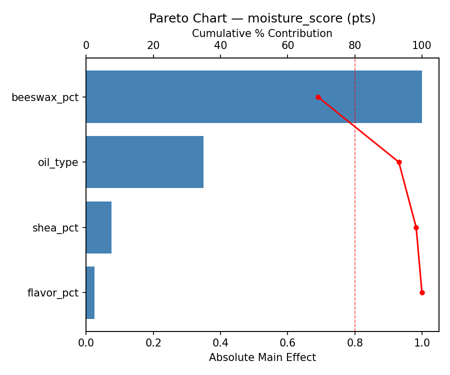
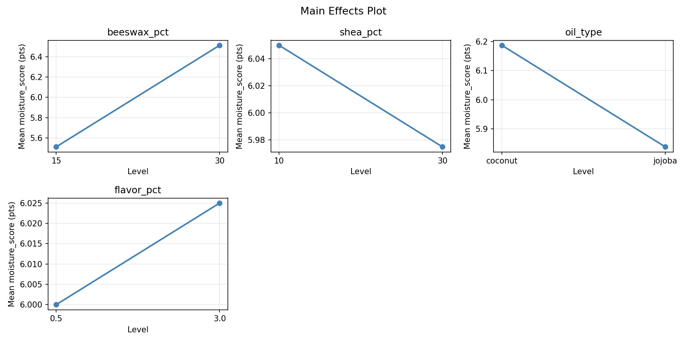
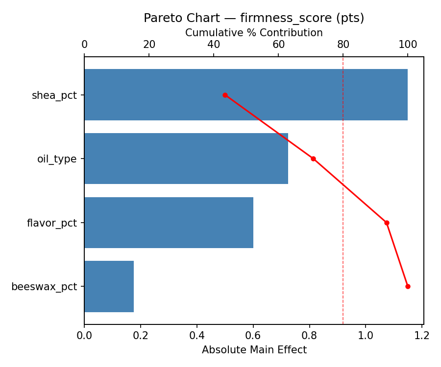
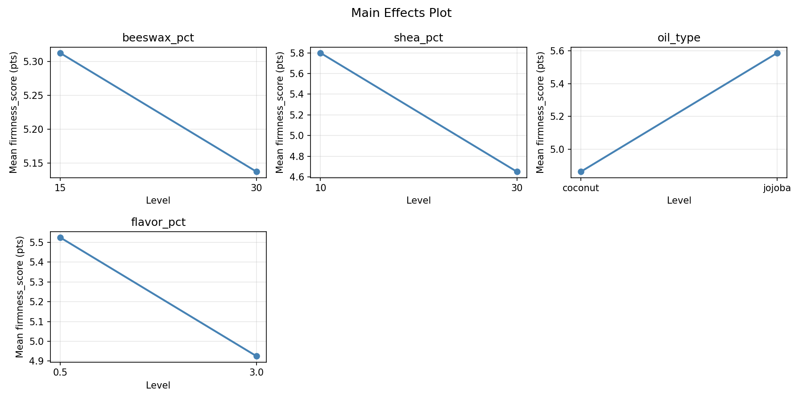
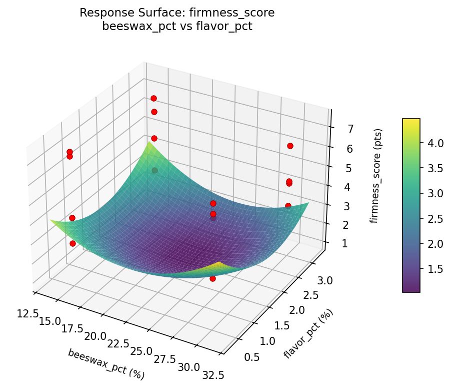
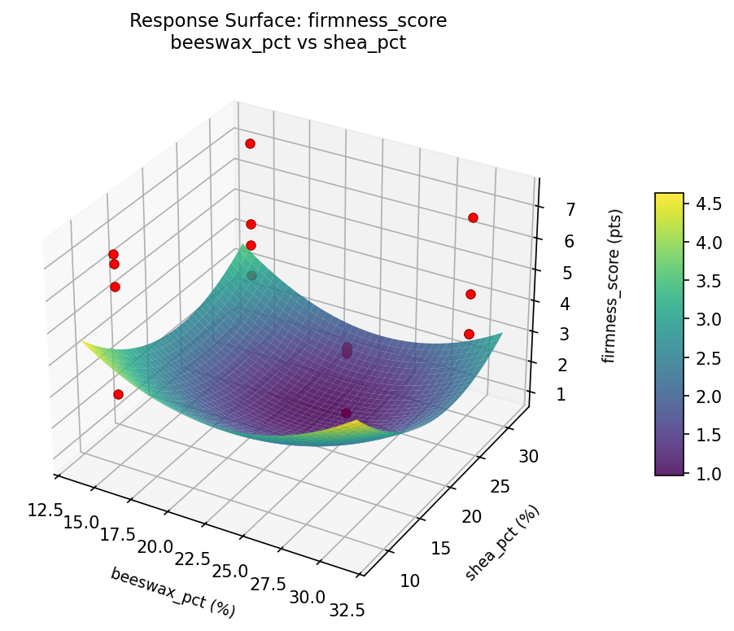
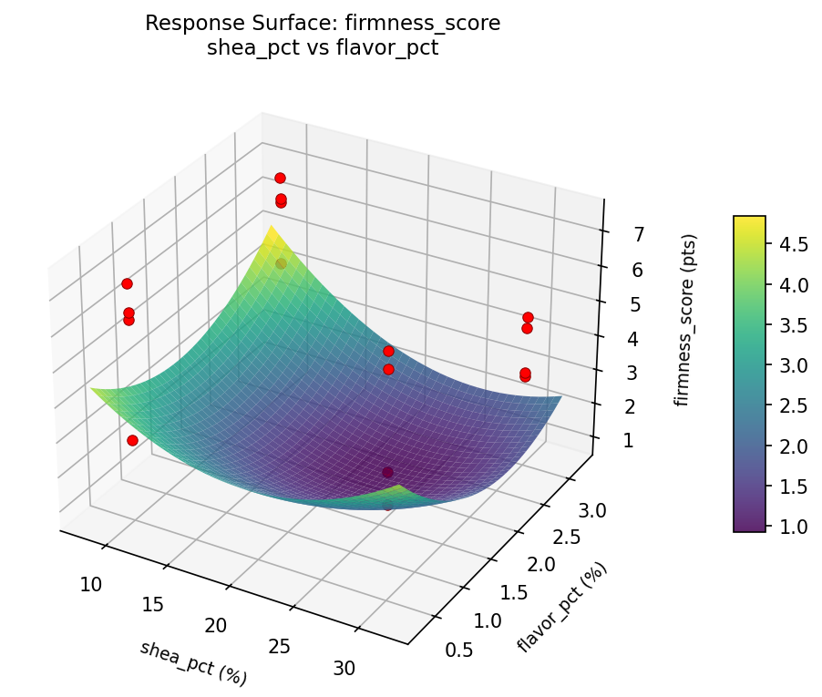
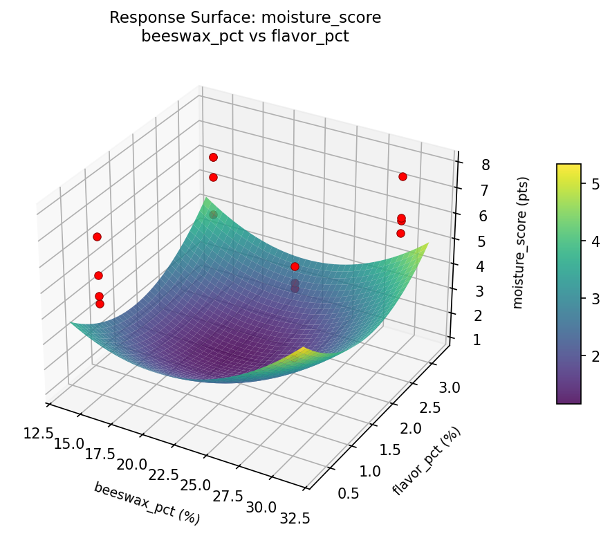
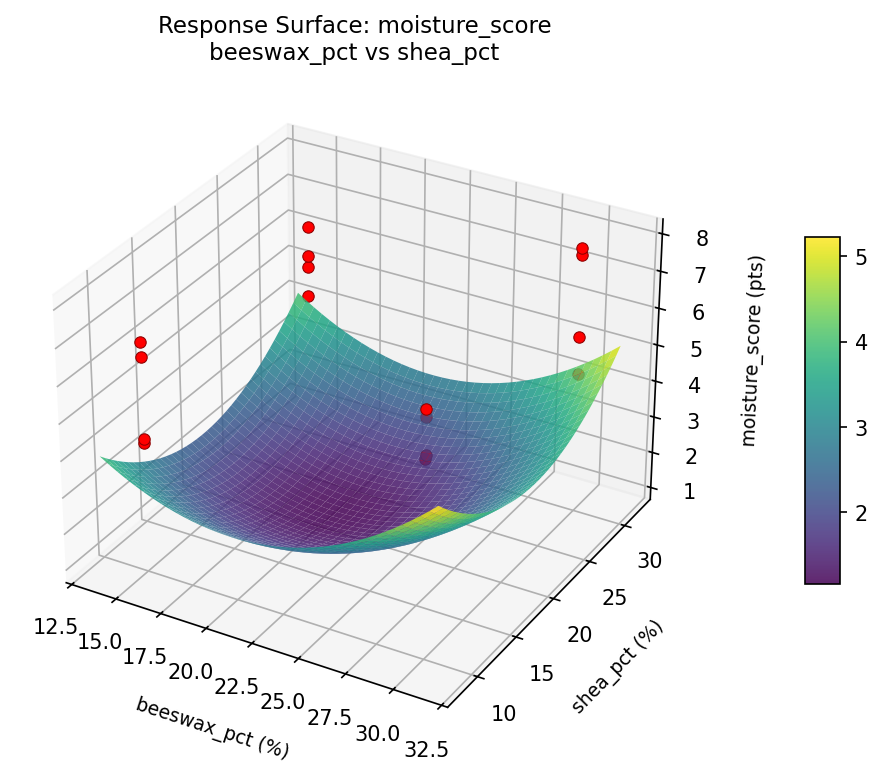
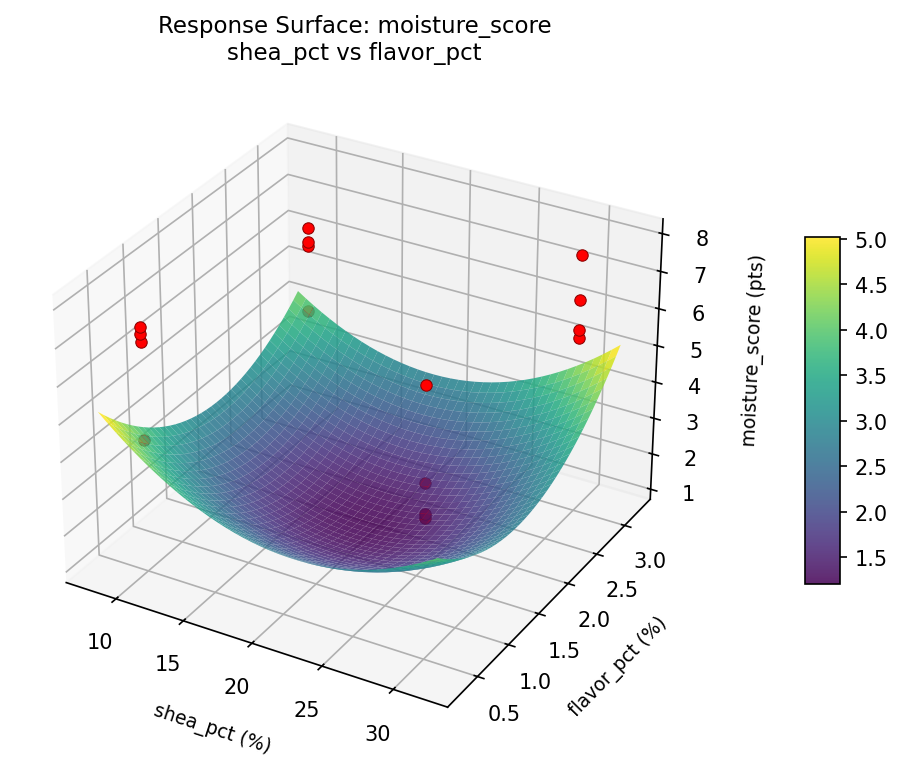

Full factorial of beeswax ratio, shea butter ratio, oil type, and flavor load to maximize moisturizing feel and firmness
| Factor | Low | High | Unit |
|---|---|---|---|
beeswax_pct | 15 | 30 | % |
shea_pct | 10 | 30 | % |
oil_type | coconut | jojoba | |
flavor_pct | 0.5 | 3.0 | % |
Fixed: vitamin_e = 1pct, container = tube
| Response | Direction | Unit |
|---|---|---|
moisture_score | ↑ maximize | pts |
firmness_score | ↑ maximize | pts |
The Full Factorial Design produces 16 runs. Each row is one experiment with specific factor settings.
| Run | beeswax_pct | shea_pct | oil_type | flavor_pct |
|---|---|---|---|---|
| 1 | 15 | 30 | jojoba | 3.0 |
| 2 | 30 | 10 | coconut | 3.0 |
| 3 | 15 | 30 | coconut | 3.0 |
| 4 | 15 | 30 | jojoba | 0.5 |
| 5 | 30 | 30 | jojoba | 0.5 |
| 6 | 30 | 10 | jojoba | 0.5 |
| 7 | 30 | 30 | coconut | 0.5 |
| 8 | 30 | 10 | coconut | 0.5 |
| 9 | 15 | 10 | coconut | 3.0 |
| 10 | 15 | 10 | jojoba | 0.5 |
| 11 | 30 | 30 | coconut | 3.0 |
| 12 | 30 | 30 | jojoba | 3.0 |
| 13 | 15 | 30 | coconut | 0.5 |
| 14 | 30 | 10 | jojoba | 3.0 |
| 15 | 15 | 10 | coconut | 0.5 |
| 16 | 15 | 10 | jojoba | 3.0 |
| Feature | Value |
|---|---|
| Design type | full_factorial |
| Factor types | continuous (3), categorical (1) |
| Arg style | double-dash |
| Responses | 2 (moisture_score ↑, firmness_score ↑) |
| Total runs | 16 |
Generated from actual experiment runs using the DOE Helper Tool.
Top factors: beeswax_pct (69.0%), oil_type (24.1%), shea_pct (5.2%).
Pareto Chart

Main Effects Plot

Top factors: shea_pct (43.4%), oil_type (27.4%), flavor_pct (22.6%).
Pareto Chart

Main Effects Plot

3D surfaces fitted with quadratic RSM. Red dots are observed data points.
firmness score beeswax pct vs flavor pct

firmness score beeswax pct vs shea pct

firmness score shea pct vs flavor pct

moisture score beeswax pct vs flavor pct

moisture score beeswax pct vs shea pct

moisture score shea pct vs flavor pct
